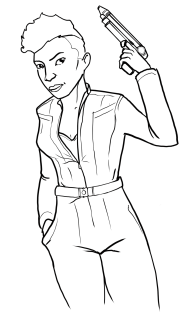
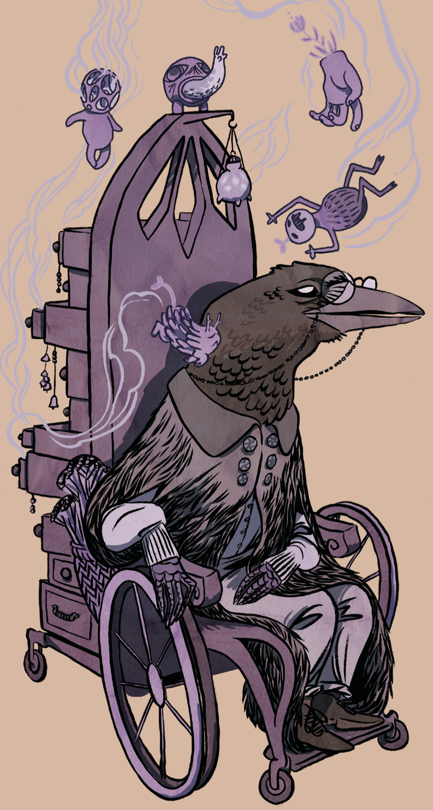
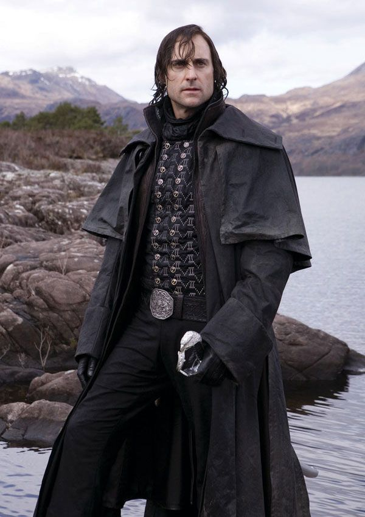

I'm calling them slides. They're basically an infinite carousel, though they only go one way so far. It might be good for playbooks.

Naomi Nagata Play Book
This is Naomi. She's a badass.
Reasons she's a badass:
- Engineer
- Brilliant
- She's the boss
- Cool
- Calm
- Collected

The Caretaker
Someone must pay attention to all the small and forgotten things in the world. Someone must listen to the voiceless.
You are alive. Your care is tender, supportive, and silent.
Choose a name and some pronouns.
Choose an animal.
- Stoat
- Salamander
- Lemur
- Crow
- A Reflective Animal
- A Quiet Animal
Choose 2 you value and 2 that feel exchausting to be.
- Alert
- Reflective
- Patient
- Friendly
- Expressive
- Organized
- Gentle
- Masculine
- Feminine

The Scapegrace
You are the disgraced younger sibling of a noble house.
You are alive. Your care is gruff and backhanded.
Choose a name and some pronouns.
Choose the number of older siblings you have.
Choose an animal.
- Wolverine
- Komodo Dragon
- Swan
- Afghan Hound
- A tough animal
- A noble animal
Choose 3-4 to describe your look.
- Imbeccably dressed
- A long black coat
- A scar you try to hide
- A signet ring
Choose 2 you believe about yourself and 2 others assume about you.
- Wealthy
- Unscrupulous
- I am unredeemable
- Charming
- Ruthless
- Bad things that happen are your fault